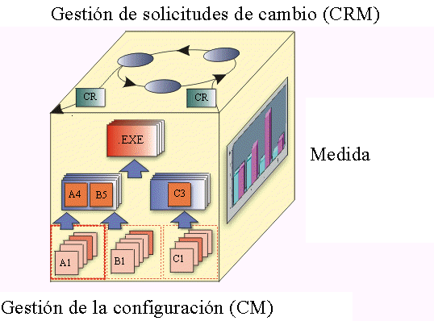

|
Los principales aspectos de un sistema de CM suelen ser los siguientes:
-
Gestión de solicitudes de cambio
-
Gestión de la configuración (CM)
-
Seguimiento de cambios
-
Selección de la versión
Los sistemas de CM también pueden incluir:
-
Fabricación de software
-
Medida y contabilidad de estado de la configuración
El siguiente cubo de CM, que sugiere su interdependencia mutua, sirve para iconografiar los aspectos principales de un
sistema de CM.

-
Gestión de solicitudes de cambio (CRM): trata la infraestructura organizativa necesaria para evaluar el
coste, la planificación y el impacto de un cambio solicitado en el producto existente. La Gestión de solicitudes de
cambio dirige el funcionamiento de un equipo de revisión de cambios o un panel de control de cambios.
-
Contabilidad de estado de la configuración (Medida): se utiliza para describir el 'estado' del producto en
función del tipo, número, índice y gravedad de los defectos que se encontraron y arreglaron, durante el desarrollo
del producto. La métrica derivada de este aspecto, ya sea mediante auditorías o datos brutos, es útil para
determinar el estado de completitud general del proyecto.
-
Gestión de la configuración (CM): describe la estructura del producto e identifica sus elementos de
configuración constituyentes, que se tratan como entidades de las que se pueden hacer versiones en el proceso de
gestión de la configuración. La CM se encarga de la definición de la configuración, la compilación y el etiquetado,
la recopilación de productos de trabajo con versión en conjuntos constituyentes y el mantenimiento de la
rastreabilidad entre estas versiones.
-
Seguimiento de cambios: describe lo que se hace a los elementos, por qué motivo y a qué hora. Sirve como
historial y fundamento de los cambios. Es bastante independiente de la evaluación del impacto de los cambios
propuestos, como se describe en 'Gestión de solicitudes de cambio'.
-
Selección de la versión: el objetivo de una buena 'selección de la versión' es garantizar que se seleccionan
las versiones correctas de elementos de configuración para el cambio y la implementación. La selección de la
versión depende de una base sólida de 'identificación de la configuración'.
-
Fabricación de software: cubre la necesidad de automatizar los pasos de compilación, prueba y empaquetado de
software para la distribución.
El crear un vocabulario describe un sistema de CM global que cubre todos los aspectos de la CM. El objetivo es prever
un proceso de CM eficaz que:
-
se incorpore en el proceso de desarrollo de software.
-
ayuda a gestionar la evolución de los productos de trabajo de desarrollo de software.
-
permite a los desarrolladores ejecutar tareas de CM con una intromisión mínima en el proceso de desarrollo.
Uno de los objetivos del proceso de CM de Rational es fomentar el control de versión de los productos de trabajo que se
capturan en las herramientas de desarrollo y desenfatizar la producción ineficaz de recursos de documentación en papel.
Otro objetivo de este proceso es garantizar que el nivel de control que se aplica a cada producto de trabajo se basa en
el nivel de madurez de dicho producto. A medida que maduran los productos de trabajo, la autorización de cambios migra
del implementador al integrador del sistema o subsistema, al gestor de proyectos y, finalmente, al cliente.
Para la eficacia del proceso, es importante asegurarse de que los gastos burocráticos generales asociados con el
proceso de gestión de solicitudes de cambio son acordes con la madurez del producto.
Por ejemplo, durante las primeras iteraciones, el proceso de gestión de solicitudes de cambio (CRM) puede ser
relativamente informal. En las fases posteriores del ciclo vital de desarrollo, el proceso de CRM puede ser más
estricto para garantizar que los recursos de documentación y prueba necesarios pueden manejar los cambios y evaluar la
inestabilidad potencial que puede provocar un cambio. Un proyecto que no pueda ajustar el nivel de control durante el
proceso de desarrollo no se ejecutará con toda la eficacia posible.
|